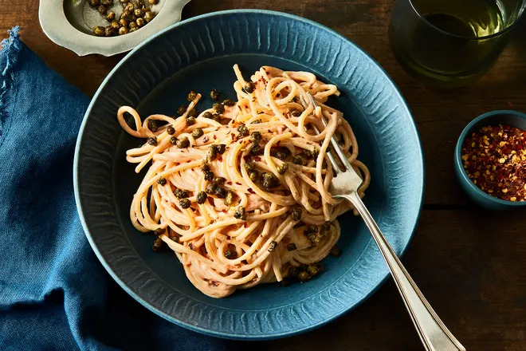

Sun-Dried Tomato Pasta With Crispy Capers

Description:
A weeknight pasta with the mood of a weekend bagel.
Just like the names suggest, cream cheese plus sun-dried tomatoes equals a
supremely creamy, cheesy tomato sauce—two ingredients, zero fuss. All it needs is a
big splash of salty, starchy pasta water to yield an Alfredo-like consistency, ideal for
hugging long noodles. I'm a fan of spaghetti and bucatini here, but fettuccine,
linguini, or even ramen would all be great. (And, yes, a short shape, like rigatoni,
would work in a pinch.)
Ingredients:
- 4 ounces cream cheese
- 1/3 cup (2 ounces) capers, patted dry
- Kosher salt
- 8 ounces spaghetti or bucatini
- Freshly ground black pepper or red pepper flakes, to taste (optional)
Steps:
-
Set a large pot of water over high heat to come to a boil.
-
Meanwhile, in a large bowl, use a fork to mash the
minced tomatoes into the cream cheese, until the
cream cheese is rosy.
-
Set a small skillet over medium heat and add 2
tablespoons of tomato oil. Add the capers and cook,
stirring once or twice, for 2 to 4 minutes, until they're
puffed and starting to brown. Turn off the heat, then
use a fork to transfer them to a towel-lined plate.
-
When the water is boiling, generously season it with
salt. Add the pasta and cook according to the
package directions until al dente. Just before the
pasta is done, scoop out about 1 cup of pasta water.
-
While stirring with a fork, pour ¼ cup of pasta water
into the tomato cream cheese. Use tongs to add the
pasta and toss to coat, adding more pasta water to
sight (about ⅓ cup for me) until the consistency is
where you want it, keeping in mind that it will thicken
as it cools. Season to taste with salt.
-
Divide the pasta between two shallow bowls or plates
and evenly top with the fried capers, plus black
pepper or red pepper flakes if you'd like.